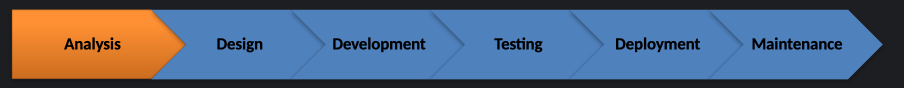

Project Management
Software Development Life Cycle
Analysis
- Understand the problem that needs to be solved. How can the current situation be improved?
- Study current processes, identify strengths and weaknesses.
- Understand the underpinning data
Create: Software specification.
Design
- Using the software specification, design a solution.
- This might involve interface designs, data dictionaries, flowcharts, pseudocode, class diagrams etc.
Create: Software Designs
Development
Create the solution using the appropriate programming languages and tools.
Testing
Test the solution against the requirements. Does it do what the client wanted?
Correct any issues found.
Create: Test log
Deployment
Roll the software out. This may be done in stages with a parallel 'test phase' where both old and new systems are run side by side so that any issue do not impact on client business.
Create: snag lists.
Maintenance
Once the software is live, it will need to be maintained. This may involve bug fixes, updates, new features etc.
Create: Maintenance log.
Agile
- Concept
- Determine scope
- Requirements and features
- Inception
- Team assembly
- Design work - mock ups
- Iteration (construction/development)
- Developers work on a simple functional model
- Loop through feedback and refinement loops.
- Release
- QA testing
- Produce final iteration and release product
- Maintenance
- Support
- Resolve bugs
- Training
- Retirement
Some Approaches to Agile
Kanban is a simple, visual means of managing projects that enables teams to see the progress so far and what's coming up next.
Scrum focuses on breaking a project down into sprints and only planning and managing one sprint at a time.
Extreme Programming (XP) was designed for Agile software development projects. It focuses on continuous development and customer delivery and uses intervals or sprints. It also focuses on Pair Programming.
Scrum and Sprint
Scrum team structure involves three distinct roles. The three Scrum roles are:
- Product owner
- Scrum master
- Development team member
These Scrum roles are often different from official job titles, meaning that the development team, for example, can be comprised of testers, designers, programmers, and more.
Scrum teams are usually ten or less people.
For Scrum to be effective, there has to be strong communication, accountability, and collaboration between team members.
Transparency: Product owners need to be clear and precise about requirements. The development team should also be transparent about roadblocks and impediments so they can be resolved quickly.
Accountability: Members of the Scrum team are accountable to themselves and to the delivery of the final sprint goal.
Self-organization: Every member of the team should understand their role and responsibilities and be proactive in problem-solving.
Meetings
Scrum team members should understand what role they play and how their participation in each Scrum event brings them closer to the sprint goal and overall project goal.
The events and meetings Scrum teams attend are:
- Scrum sprint planning meeting occurs before every Scrum sprint. Determine the goal of the sprint
- Daily stand-up meetings: A short event. Update the rest of the team about individual progress and impediments.
- Scrum of Scrums meetings: Ideally, one representative from each Scrum team in the organization will meet to synchronize efforts, discuss interdependencies, and inform each other of potential cross-team impediments.
- Sprint review: Review the outcome of the sprint.
- Sprint retrospective: Review issues from the previous sprint. This enables teams to improve and overcome any process obstacles that proved tricky during the sprint